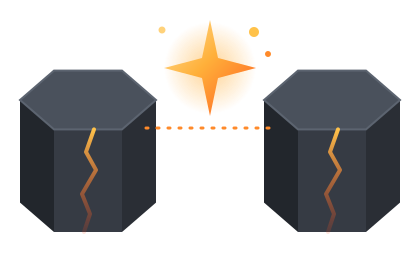

sparkstone
Thinking Machines' InklingInkling 2 Mini and frontier MoE models, at native NVFP4 speed, on your desk.nbsp;2Inkling 2 Mini and frontier MoE models, at native NVFP4 speed, on your desk.nbsp;Mini at native NVFP4, on the AI box on your desk.
An open inference stack for NVIDIA DGX Spark (GB10): the Basalt engine ported to sm_121 + AArch64,
single-node and twin-Spark serving.
GB10 · sm_121
NVFP4 tensor cores
1M context
Twin Spark
